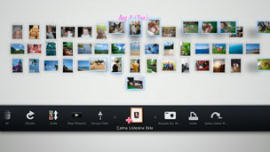

Seçili fotoğraflardan bir oynatma listesi oluşturma
Bir oynatma listesi oluşturmak için fotoğrafları seçebilirsiniz. Bir oynatma listesiyle, seçili fotoğrafları istediğiniz zaman aynı sırada görüntüleyebilirsiniz.
Bir oynatma listesi oluşturma
1. |
[Kütüphane Alanı] içinden, oynatma listesine eklemek istediğiniz bir fotoğrafı seçin,  |
||||||||||||
|---|---|---|---|---|---|---|---|---|---|---|---|---|---|
2. |
[Çalma Listesi Alanı] içinde boş bir alana gitmek için sol çubuğu kullanın ve sonra |
||||||||||||
3. |
Oynatma listesi için aşağıdaki seçenekleri ayarlayın.
|
 (Çalma Listesine Ekle) öğesini seçin.
(Çalma Listesine Ekle) öğesini seçin. düğmesine basın.
düğmesine basın.
 (Müzik) kategorisinden slayt gösterisi sırasında arkaplanda çalınacak müziği seçin.
(Müzik) kategorisinden slayt gösterisi sırasında arkaplanda çalınacak müziği seçin. İpuçları
- Oynatma listesi ayarları
 (Düzenle) altından düzenlenebilir.
(Düzenle) altından düzenlenebilir. - Her oynatma listesinin kendi ayarları olabilir.
Fotoğrafları oynatma listesine ekleme
1. |
Oynatma listesine eklemek istediğiniz fotoğrafları seçin, |
|---|---|
2. |
Oynatma listesini seçin ve sonra |
Bir oynatma listesinin ayarlarını düzenleme
Bir oynatma listesinin ayarlarını düzenleyebilirsiniz. Düzenlemek istediğiniz oynatma listesini seçin,  düğmesine basın ve sonra (Düzenle) öğesini seçin.
düğmesine basın ve sonra (Düzenle) öğesini seçin.
Bir oynatma listesini taşıma
Bir oynatma listesini başka bir konuma taşıyabilirsiniz. Taşımak istediğiniz oynatma listesini seçin, düğmesine basın ve sonra  (Hareket Ettir) öğesini seçin. Oynatma listesini sol çubuğu kullanarak taşıyabilirsiniz.
(Hareket Ettir) öğesini seçin. Oynatma listesini sol çubuğu kullanarak taşıyabilirsiniz.
İpucu
Bir oynatma listesini menüye erişmeden de taşıyabilirsiniz. Oynatma listesini seçin ve sonra oynatma listesini taşımak için sol çubuğu kullanırken  düğmesini basılı tutun.
düğmesini basılı tutun.
Bir oynatma listesini silme
Bir oynatma listesini silmek için, silmek istediğiniz oynatma listesini seçin, düğmesine basın ve sonra  (Sil) öğesini seçin.
(Sil) öğesini seçin.